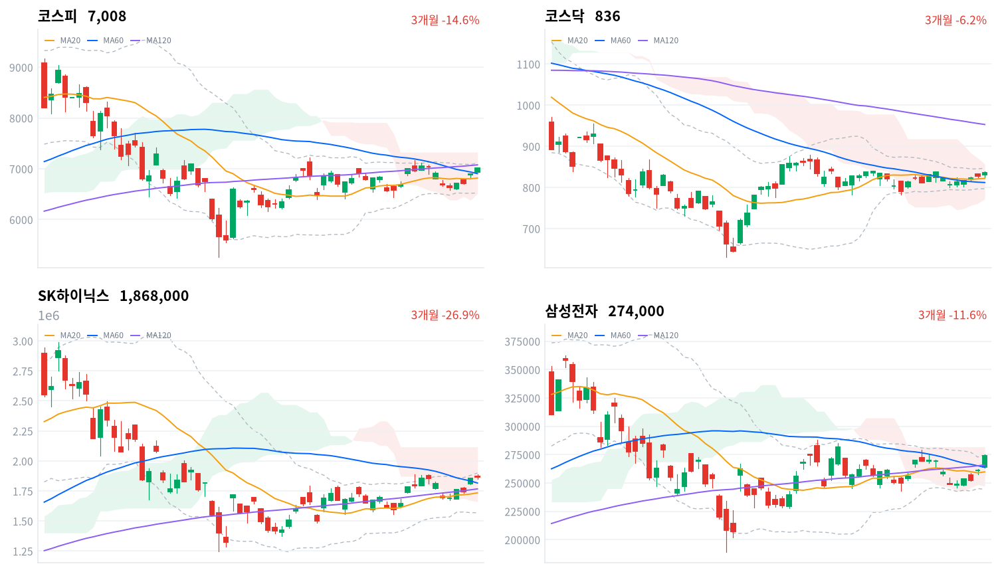

코스피는 오늘 1.65% 올라 7,007로 마감해 7거래일 만에 다시 7,000선을 넘어섰다. 삼성전자·SK하이닉스 등 반도체 대형주가 상승을 이끌었고 코스닥도 1.11% 올라 836으로 마쳤다.
다만 개인은 코스피에서 3조1,850억원을 순매도했고(당일 잠정) 외국인은 117억원 순매수로 사실상 보합에 그쳤다. 오늘 상승을 뒷받침한 주체는 기관으로, 1조5,162억원을 순매수했다.
오늘 코스피는 1.65% 올라 7,008로 마감했고, 지난 9월10일 이후 7거래일 만에 다시 7,000선을 넘어섰다. 코스닥도 1.11% 올라 836으로 함께 올랐다. 삼성전자가 장중 4.21% 뛰는 등 반도체 대형주 강세가 이 상승을 이끌었다.
수급으로 보면 이 랠리를 지지한 힘과 거스른 힘이 뚜렷이 갈린다. 코스피에서 기관은 1조5,162억원을 순매수했지만(당일 잠정) 개인은 3조1,850억원을 순매도했고, 외국인은 117억원 순매수로 사실상 보합이었다. 지수를 밀어올린 힘은 기관, 그중에서도 외국인이 아니라 국내 기관 쪽에 있었다는 뜻이다.
위험 노출은 다음 세션까지 유지한다. 반도체와반도체장비 업종은 171종목 중 142종목이 함께 올라 상승 종목 비중이 83%에 달해, 오늘 상승이 몇몇 대형주가 아니라 업종 전반의 움직임이었다는 근거가 된다. 다만 외국인이 사실상 관망한 하루에 개인이 3조원 넘게 팔았다는 점은 이 상승이 이어질지 확인이 더 필요하다는 뜻이라, 추격 매수보다는 다음 세션에 외국인 수급이 돌아오는지부터 본다.
코스피가 60일 이동평균(6,904)을 지키는 동안은 오늘의 재탈환을 유효한 흐름으로 본다. 이 레벨을 내주면 오늘 상승이 반도체 쏠림 속 하루짜리 반응이었다는 뜻이 되므로 판단을 다시 검토한다.
9월18일(금, 현지시간) 미국 3대 지수는 엇갈렸다. 나스닥이 0.39%, S&P500이 0.17% 오른 반면 다우는 0.18% 내렸다. 이날 아시아 시장은 닛케이(+1.38%, 9월18일 기준)·항셍(+1.18%)·상해종합(+0.97%)·대만가권(+1.14%)이 모두 올라 평균 1.17% 상승했고, 코스피는 이 평균보다 0.48%포인트 더 크게 올라 지역에서 가장 강했다.
코스피는 전일 종가(6,894)보다 44포인트가량 높은 6,938에서 갭업 출발했다. 한국 정규장 시간대 미국 선물은 ES가 0.2%, 나스닥선물(NQ)이 0.25% 올라 두 선물 모두 완만한 강세를 보였다.
코스피는 오전 내내 오르며 오후 1시반 7,023까지 뛴 뒤 오후 2시반 6,983까지 밀렸다가 오후 들어 낙폭을 만회하며 마감했다. 코스닥도 비슷한 궤적으로 오전 10시반 837까지 오른 뒤 830대 박스권을 오가며 하루를 마쳤다. 원/달러 환율은 오전 10시반 1,387원까지 올랐다가 정규장 마지막 30분 1,377원까지 내려 종가 1,378원으로 하루를 마쳤다.
오늘은 삼성전자가 장중 한때 4.21% 오르는 등 반도체 대형주 강세가 코스피·코스닥을 함께 끌어올렸다. 지난 금요일 미국 메모리 랠리(마이크론 +3.92%, 시게이트 +6.93%)와 최근 이어진 반도체 수출 호조 재료가 겹쳤을 가능성이 있지만, 두 재료 중 어느 쪽이 더 크게 작용했는지 가를 근거는 아직 없다. 코스피 프로그램 매매 자료는 오늘 결측이라 이 경로는 확인할 수 없었다.
코스피는 오늘 7,008로 마감해 지난 9월10일 이후 7거래일 만에 다시 7,000선 위로 올라섰다. 최근 20거래일 고점(7,172)엔 못 미치지만 저점(6,409)보다는 뚜렷이 위인 자리이며, 아직 120일 이동평균(7,076) 아래에서 마감했다.
| 지수 | 종가 | 등락률 | 시가 | 고가 | 저가 | 전일 종가 |
|---|---|---|---|---|---|---|
| 코스피 | 7,007.72 | +1.65% | 6,938.34 | 7,027.58 | 6,938.34 | 6,894.23 |
| 코스닥 | 836.27 | +1.11% | 830.71 | 838.32 | 822.41 | 827.12 |
코스피 지수는 시가 6,938에서 출발해 오전 내내 오르며 오후 1시반 7,023까지 뛰었다. 장중 고가는 7,028로 이 부근에서 형성됐고, 이후 오후 2시반 6,983까지 밀렸다가 오후 들어 낙폭을 되돌리며 마감했다.
코스닥은 시가 831에서 출발해 오전 10시반 837까지 오른 뒤 830대 초중반 박스권을 오갔다. 장중 저가 822와 고가 838 사이를 오가다 마감 직전 836으로 하루를 마쳤다.
두 지수를 함께 밀어올린 힘은 반도체 대형주였다. 삼성전자가 장중 크게 뛰는 등 반도체 강세가 코스피·코스닥에 고르게 퍼졌고, 하루 고가와 저가 사이 폭도 코스피 89포인트·코스닥 16포인트로 최근 며칠보다 뚜렷이 넓은 하루였다.

코스피·코스닥·SK하이닉스·삼성전자 3개월 일봉에 이동평균(20·60·120)·볼린저밴드·일목균형표 구름대를 오버레이했다. 상승 캔들은 녹색, 하락 캔들은 적색으로 표시된다.
코스피(7,008)는 20일선(6,816)·60일선(6,904)은 넘어섰지만 120일선(7,076)은 아직 못 넘는 역배열 자리에 있고, 일목 구름 안에서 장을 마쳤다. 위로는 120일선을 넘어야 볼린저 상단(7,110)이 다음 목표로 열리고, 아래로는 60일선이 무너지면 20일선이 지지선 역할을 맡는다.
코스닥(836)은 일목 기준선(831) 부근에서 이동평균 배열이 혼조인 채 구름 안으로 마감했다. 20일 고점(841)을 넘어서면 볼린저 상단(847)까지 열리고, 반대로 기준선이 무너지면 60일선(812)이 다음 지지선이 된다.
SK하이닉스(187만원)는 이동평균이 혼조인 채 60일선(182만원)을 웃돌며 일목 구름 안에서 마감했다. 20일 고점(189만원)을 넘어서면 볼린저 상단(190만원)까지 열리고, 반대로 60일선이 무너지면 120일선(177만원)이 다음 지지선이 된다.
삼성전자(27만원)는 이동평균이 역배열인 채 일목 구름 안에서 볼린저 상단 부근까지 올라 마감했다. 볼린저 상단이자 일목 구름 상단인 28만원을 넘어서면 추가 상승 여력이 열리고, 20일선(26만원)이 무너지면 구름 하단(25만원)이 다음 지지선이다.
위 레벨은 이동평균·볼린저밴드·일목균형표와 스윙 고저를 기계적으로 계산한 값이며 투자 권유가 아니다.
| 주체 | 순매수(억원) |
|---|---|
| 개인 | -31,850 |
| 외국인 | +117 |
| 기관 | +15,162 |
| 주체 | 순매수(억원) |
|---|---|
| 개인 | +1,416 |
| 외국인 | -995 |
| 기관 | -285 |
코스피에서는 기관과 개인이 정반대로 움직였다(당일 잠정). 기관이 1조5,162억원을 순매수한 반면 개인은 3조1,850억원을 순매도했고, 외국인은 117억원 순매수로 사실상 보합이었다.
위키트리는 코스피 지수 ETF 매수세가 이 기관 순매수를 뒷받침했다고 전했다. 지수가 오른 날 외국인이 관망한 채 국내 기관이 상승을 떠받친 조합은 흔한 그림은 아니다.
코스닥은 코스피와 결이 달랐다. 개인이 1,416억원을 순매수해(당일 잠정) 상승을 이끈 주체였고, 외국인은 995억원, 기관은 285억원을 각각 순매도했다.
코스닥 개인 순매수 일부는 상장 첫날 268% 급등한 네오사피엔스 관련 거래로 설명할 수 있지만, 이 종목 하나가 코스닥 개인 순매수 전체를 설명한다고 단정할 근거는 없다.
코스피·코스닥 모두 프로그램 매매·장중 누적 수급 자료는 2026년 9월17일 네이버 금융 개편으로 소스가 폐지돼 오늘 발행에서는 결측이다. 대체 소스가 확보되면 다시 싣는다.
| 순위 | 종목/ETF | 구분 | 거래대금 | 비고 |
|---|---|---|---|---|
| 1 | 삼성전자 | 개별주 | 6.04조원 | - |
| 2 | SK하이닉스 | 개별주 | 5.08조원 | - |
| 3 | 반도체 테마 ETF | 테마·롱 | 1.53조원 | 28종 합산 |
| 4 | 삼성전자우 | 개별주 | 0.92조원 | - |
| 5 | KODEX CD금리액티브(합성) | 단기금리·현금성 | 0.90조원 | - |
| 6 | 삼성전기 | 개별주 | 0.81조원 | - |
| 7 | SK스퀘어 | 개별주 | 0.56조원 | - |
| 8 | SK하이닉스 레버리지 | 레버리지·롱 | 0.31조원 | 5종 합산 |
| 9 | 광전자 | 개별주 | 0.22조원 | - |
| 10 | 삼성전자 레버리지 | 레버리지·롱 | 0.19조원 | 5종 합산 |
단위 백만원 원본을 조 단위로 환산. 같은 기초자산 ETF는 방향별로, 같은 테마 섹터 ETF는 테마별로 묶었으며 코스피200·코스닥150 추종 지수 ETF 및 그 레버리지·인버스, 해외 ETF는 제외했다.
개별 반도체 관련 3종목(삼성전자·SK하이닉스·삼성전자우) 합산 거래대금은 12.04조원으로, 반도체 테마 ETF 28종을 합친 1.53조원의 7.9배였다. 오늘도 거래는 바스켓이 아니라 개별 종목 쪽에서 훨씬 활발했다.
SK하이닉스 레버리지(0.31조원, 5종 합산)와 삼성전자 레버리지(0.19조원, 5종 합산)가 나란히 상위권에 들었고 인버스 상품은 거래대금 상위 10위 안에 하나도 없었다. 반도체 대형주가 강하게 오른 날 개인 자금이 반대 베팅보다는 상승 베팅 쪽으로 쏠렸다는 관측은 가능하지만, 개별 투자자 순매수 자료가 없어 이것이 개인만의 방향성 베팅인지는 단정하지 않는다.
KODEX CD금리액티브(합성)(0.90조원)도 상위 5위에 들었지만 이 상품은 방향성 베팅이 아니라 CD금리를 따라가는 단기 자금 대기용 상품이다. 반도체 강세장과는 별개로 단기 자금이 오갔다는 뜻으로 읽는 편이 맞다.
삼성전기(0.81조원)·SK스퀘어(0.56조원)·광전자(0.22조원)도 거래대금 상위 10위 안에 들었다. 세 종목 모두 반도체 밸류체인과 맞닿아 있어, 오늘 거래대금 상위표는 대형주부터 소형주까지 반도체 재료가 얼마나 넓게 거래를 끌어들였는지 보여준다.
오늘 코스피·코스닥 업종분류(kr_industry.json) 기준 상승률 1위는 소프트웨어(+19.3%)였다. 그러나 74종목 중 상승은 39종목에 그쳐 상승 종목 비중은 53%에 머물렀고, 가격 상승률만큼 폭넓은 상승은 아니었다.
같은 이름의 소프트웨어라도 위 섹터 막대(WICS 분류 기준)에서는 오히려 -0.76% 하락으로 집계됐다. 두 자료는 종목 구성이 다른 별개의 분류 체계라 서로 검증하는 데 쓸 수 없고, 각각 출처를 밝혀 나란히 인용하는 편이 정확하다.
오늘 가장 폭넓게 오른 업종은 반도체와반도체장비(+3.77%)였다. 171종목 중 142종목이 함께 올라 상승 종목 비중이 83%에 달했고, 위 섹터 막대의 반도체(+3.60%)도 같은 방향을 가리켰다.
건강관리기술(+7.68%, 13종목 중 7종목 상승)과 석유와가스(+3.79%, 19종목 중 10종목 상승)도 상승 종목 비중이 절반을 넘어 폭넓은 상승으로 분류됐다. 반면 섹터 막대에서는 건설(-1.30%)·철강소재(-1.44%)·조선(-1.66%)·2차전지(-2.01%)·자동차(-2.05%)·방산(-2.23%)이 모두 내려, 최근 한 달 강세를 보였던 종목군이 오늘 하루는 되돌림을 겪었다.
삼성전자(27만원)와 SK하이닉스(187만원)가 오늘도 거래대금 1·2위를 지켰다. 서울신문과 아시아경제는 삼성전자가 장중 한때 4.21% 오르며 반도체 대형주 강세를 이끌었다고 전했다.
반도체와반도체장비 업종은 상승 종목 비중이 83%에 달해, 오늘 강세가 몇몇 대형주가 아니라 업종 전반에 퍼진 결과였음을 뒷받침한다.
코스닥에서는 AI 음성합성 기업 네오사피엔스가 상장 첫날 공모가 대비 268% 급등했다고 위키트리와 아시아경제가 전했다. 다만 코스닥 개인 순매수(+1,416억원, 당일 잠정)를 이 종목 하나로 전부 설명할 근거는 없다.
위키트리는 코스피 지수 ETF 매수세가 기관 순매수를 뒷받침했다고 보도했다. 앞서 본 대로 오늘 기관 순매수는 개인의 대규모 매도를 상쇄하는 역할을 했다(당일 잠정).
원/달러 환율은 오전 10시반 1,387원까지 올랐다가 정규장 마지막 30분 1,377원까지 내려 종가 1,378원으로 하루를 마쳤다. 국고채 10년물과 3년물의 금리차는 40.1bp로 9월18일 43.1bp보다 좁아져, 단기물이 장기물보다 더 오르는 하루였다. 코스피가 오르고 원화가 오후 들어 강세로 돌아선 날 채권시장은 장단기가 반대 방향으로 움직여 결이 달랐다.
| 지표 | 금리 | 전일比(bp) | 기준일 |
|---|---|---|---|
| 국고채 3년 | 4.056% | +2.1 | 2026-09-21 |
| 국고채 10년 | 4.457% | -0.9 | 2026-09-21 |
| CD 91일 | 3.20% | 0.0 | 2026-09-21 |
| 회사채 AA- 3년 | 4.724% | +1.8 | 2026-09-21 |
| 한국은행 기준금리 | 3.00% | +25.0(전월比) | 2026-08 |
10년물에서 3년물을 뺀 장단기 금리차는 40.1bp로 9월18일 43.1bp보다 3.0bp 좁아졌다. 3년물이 2.1bp 오르고 10년물이 0.9bp 내린 결과라, 방향은 단기물 주도의 커브 평탄화다.
회사채 AA- 3년물과 국고채 3년물의 신용 스프레드는 66.8bp로 9월18일 67.1bp와 거의 같았다. 신용 쪽에서 별다른 경계 신호는 없었다는 뜻이고, 오늘 주식시장의 강한 위험선호가 회사채 시장까지 뚜렷이 번지지는 않았다고 볼 수 있다.
국고채 3년물(4.056%)은 한국은행 기준금리(3.00%, 8월 기준)보다 105.6bp 높은 자리에서 거래됐다. 이 격차는 채권시장이 기준금리 위에 얹어 둔 프리미엄의 크기를 보여줄 뿐, 앞으로의 정책 경로가 이미 가격에 반영됐다고 단정할 근거는 아니다.
CD 91일물은 3.20%로 9월18일과 변화가 없었다. 단기 지표금리가 멈춘 채 국고채 3년물만 소폭 오른 것이라, 단기 정책금리 기대보다는 국고채 자체의 수요·공급이 오늘 그 금리를 움직인 배경일 가능성이 있다. 회사채 AA- 3년물도 소폭 올라 국고채 3년물과 같은 방향으로 움직였다는 점은 이 관측과 어긋나지 않는다.
코스피·코스닥이 함께 오르고 외국인 주식 수급은 사실상 보합이었던 오늘 같은 날에는, 원화 강세와 채권시장의 움직임을 외국인 채권 자금 이동의 증거로 곧장 연결하기는 어렵다. 주식 수급과 채권 자금 흐름은 서로 다른 시장이라 별도로 관측해야 정확하다. 다음 세션에는 국고채 3년·10년물의 방향이 오늘의 단기물 주도 흐름을 이어가는지부터 확인한다.
파이낸셜뉴스와 리더스팩트에 따르면 2026년 3월6일 시행된 상법 3차 개정으로 상장사는 보유 자사주를 원칙적으로 1년 안에 소각해야 한다. 두 매체는 이 제도로 시장 전체 약 60조원 규모의 자사주가 소각될 것으로 추산했고, 뉴스티앤티 공시 집계에 따르면 오늘 하루에만 코스피 상장 44개사가 자사주 매입을 신청했다.
이 제도는 이익과 수급 두 경로로 주가에 닿는다. 자사주가 소각되면 유통주식수가 줄어 주당순이익과 자기자본이익률이 자동으로 개선되는 이익 경로가 작동하고, 밸류업 지수 편입 기대가 커진 종목에는 기관·패시브 자금 유입이라는 수급 경로도 함께 작용한다. 다만 매입 신청은 소각의 앞 단계일 뿐이라 신청 즉시 주당순이익이 개선되는 것은 아니다.
핀포인트뉴스는 오늘 밸류업 편입주 사이에서도 반도체·금융주는 매수세가 붙었지만 최근 급등했던 방산·자동차는 차익실현으로 갈렸다고 전했다. 오늘 업종 등락을 보면 반도체와반도체장비(+3.77%)와 은행(+1.67%)·증권(+1.81%) 모두 상승 종목 비중이 절반을 넘었고, 반면 섹터 막대 기준 방산(-2.23%)과 자동차(-2.05%)는 내려 이 보도와 정합했다.
다음 확인 지점은 오늘 매입 신청한 44개사가 실제 소각을 공시하는 시점이다. 소각 기한이 매입일로부터 1년이라 구체적인 시점은 종목마다 다르고, 특정 발표일은 미확정이다.
한국거래소는 밸류업 프로그램 백서 안내를 통해 기업가치제고계획을 공시한 기업 중심으로 밸류업 지수 구성을 재편할 예정이라고 밝혔다.
이 재편은 멀티플 경로로 작동한다. 새로 편입되는 종목은 밸류업 지수를 추종하는 패시브 자금의 매수 대상이 되고, 편입에서 빠지는 종목은 그 반대 압력을 받는다.
재편 대상 종목은 아직 확정되지 않아 구체적인 수혜·피해 종목을 특정할 근거는 없다. 다만 앞서 본 자사주 소각 신청 기업들처럼 기업가치제고계획을 이미 공시한 기업들이 우선 후보군으로 거론된다.
정확한 발표일은 미확정이다. 다음 발행 전에 재확인이 필요한 사안으로 남겨 둔다.
한국은행 기준금리는 8월 기준 3.00%로, 7월 2.75%에서 25bp 오른 수준을 그대로 유지하고 있다(한국은행 ECOS).
기준금리는 단기 자금조달 비용과 채권 밸류에이션의 기준점이 되는 경로로 시장에 닿는다.
국고채 3년물(4.056%)은 오늘도 기준금리보다 105.6bp 높은 자리에서 거래됐다. 이 격차 자체를 정책 선반영으로 단정할 근거는 없고, 지금은 위치로만 설명한다.
다음 금융통화위원회 회의 일정은 아직 확정되지 않았다. 통화정책 스탠스에 변화가 있는지가 다음 확인 지점이다.
오늘은 지수가 오른 날에도 모든 투자 주체가 함께 사는 것은 아니라는 사례를 볼 수 있었다. 코스피는 1.65% 올랐지만 개인은 3조원 넘게 순매도했고(당일 잠정), 이 상승을 뒷받침한 힘은 기관의 순매수였다.
가능한 설명은 두 갈래다. 9월 저점 대비 이미 상당폭 반등한 구간이라 개인이 차익을 실현했을 수도 있고, 추석 연휴를 앞두고 현금화 수요가 겹쳤을 수도 있다. 지금 데이터로는 두 설명을 가를 근거가 없다.
10년물(4.457%)에서 3년물(4.056%)을 뺀 장단기 금리차는 40.1bp로, 9월18일 43.1bp보다 3.0bp 좁아졌다. 단기물이 장기물보다 더 오른 하루였다는 뜻이다.
입력: kr_econ.json 국고채 3년·10년물, 2026-09-21 대비 2026-09-18(prev). 계산: (4.457-4.056)-(4.466-4.035). 실행: python3 -c "print(round((4.457-4.056)-(4.466-4.035),1))" → -3.0(단위 bp).
다음 확인은 두 가지다. 개인의 대규모 순매도가 추석 연휴 이후에도 이어지는지, 그리고 반도체와반도체장비 업종의 상승 종목 비중이 다음 세션에도 80% 안팎을 유지하는지를 본다.
비중이 유지되면 이번 상승이 반도체 업종 전반의 재평가에 가깝다는 쪽에 힘이 실리고, 빠르게 좁아지면 오늘의 강세가 일부 대형주에 쏠린 반응이었다는 쪽에 힘이 실린다. 원 질문일은 2026-09-21이다.